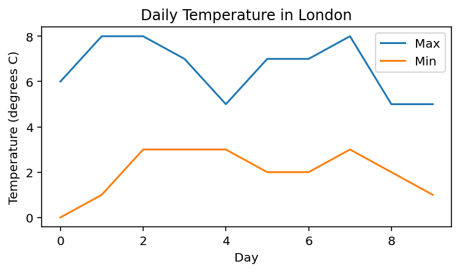

Practice 3¶
Question 1¶
Adapt the first example in the notes so that every 5 timesteps the population decreases by 20.
What value should 20 be changed to so that the popultation is roughly constant over the long term (don’t calculate this; just get a rough figure by experimenting and looking the resulting graph).
Question 2¶
Use a for loop to generate the following lists:
[5, 7, 9, 11, 13, 15][1, 10, 100, 1000, 10000, 100000][0, 1, 2, 0, 1, 2, 0, 1, 2](hint: use the%operator)
Question 3¶
Look up the predicted daily maximum and minimum temperatures for the next 10 days according to the BBC weather forecast.
https://www.bbc.co.uk/weather/2643743
Create two lists containing the maximum and minimum temperatures and plot them as two separate lines on a line graph, including axis labels and title. Look up how to add a legend in the Matplotlib documentation.
{kind=link}
Question 4¶
The following code initialises a list x with ten integers.
Write code which creates four lists, containing:
Every element of
xat an even index.Every even element.
All elements in reverse order.
Only the first and last element.
x = [18, 19, 10, 19, 11, 7, 12, 6, 5, 4]